← 返回阅读库 · 原论文目录
论文讲解阅读文档 · 内容生成 · v008
Unsupervised Image-to-Image Translation Networks[1703.00848]
视频时长 00:09:42；讲解文字 5,005 字符；提取讲解画面 35 张。按视频原顺序阅读，每段文字保留时间戳。
文字来自整段视频的自动语音转写，按自然停顿分段，并与 PPT / 论文页面 / 演示画面对齐。未将讲解压缩为摘要；术语、数字和口述公式请结合画面及原论文核对。 阅读稿已校正规范部分明确术语误识别；原始逐字稿和每处修改记录另行保留。
讲解画面为源视频截图（640×360），不是可编辑 PPT 文件。全片按每秒 2 帧扫描内容变化，逐步展开页保留；连续动画保留代表画面。清晰度受源视频限制。
下载完整资料包 · 含离线 HTML、PDF、Word、全部 PPT 画面和字幕。
原论文与材料
Unsupervised Image-to-Image Translation Networks · 下载完整 PDF（11 页）
按时间阅读
00:00:00–00:00:12 · 画面 001
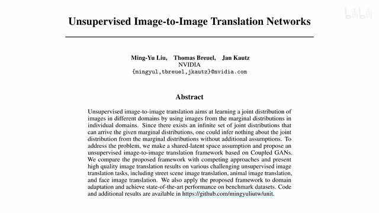
00:00:00–00:00:12 · 画面 001大家好,今天我们来快速数一篇论文Unsupervised Image-to-Image Translation Networks这篇论文的方法比较简单,也有一定年头了我们直接来看吧首先要解决什么问题是这个 Unsupervised Image-to-Image Translation
00:00:12–00:00:44 · 画面 002
00:00:12–00:00:44 · 画面 002之前呢,比如说像 pix2pix这些呢,我们可以叫它 Supervised Image Translation为什么呢?因为我们的训练样本中既有这个 Domain 的一个图像同时呢,在另一个 Domain 里面有它对应的图像相当于把这个 Ground Truth 告诉你了那显然对应的到等于这个 unsupervised 的情况就是两个 domain 里面没有对应的图像了这个要全靠这个网络自己发挥了那同时呢我们可以从联合分布的这个角度呢来看这个问题我们的这个 supervised 的情况
00:00:44–00:00:45 · 画面 003
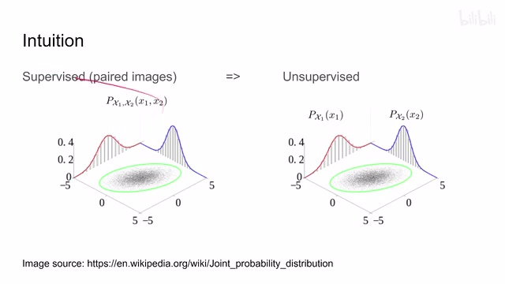
00:00:44–00:00:45 · 画面 00300:00:45–00:01:07 · 画面 004
00:00:45–00:01:07 · 画面 004我们一个 domain 的这个概率分布是一个轴另一个 domain 呢是另一个轴 supervised 的情况就相当于我知道这个联合分布上这个表面上一个个点对吧因为它们是对应的所以呢它们都会落到这个联合分布上的一个一个点你根据这个点去把整个这个联合分布这个 joint distribution 给它推断出来就好了所以呢这个呢是 supervised 的情况它呢给定的信息呢是充分的那只要你给的样本足够多从信息的角度上来讲我们是能够解除这个问题来的
00:01:07–00:01:09 · 画面 005
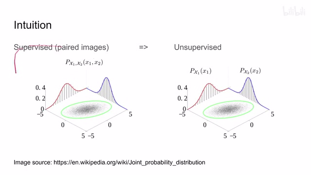
00:01:07–00:01:09 · 画面 00500:01:09–00:01:17 · 画面 006
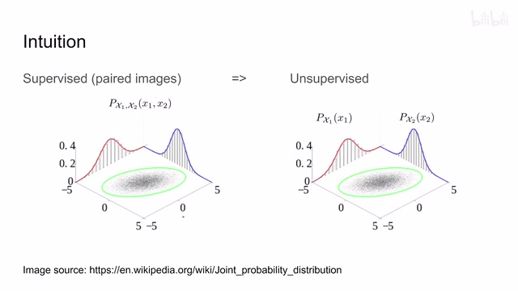
00:01:09–00:01:17 · 画面 00600:01:17–00:01:18 · 画面 007
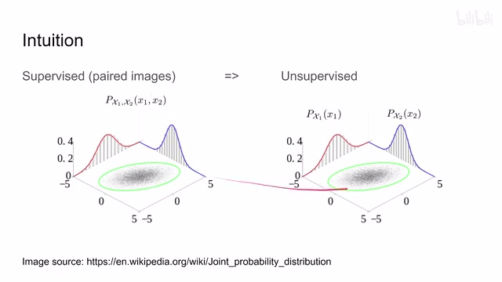
00:01:17–00:01:18 · 画面 007那在这个 unsupervised 的情况下呢就事情就变得不一样了那对于每一个 domain 来说我只能观测到它自己在这个 domain 里面的这个 distribution 这个也是录到这个图里呢就是我们现在只知道这个 marginal 的这个 distribution
00:01:18–00:01:45 · 画面 008
00:01:18–00:01:45 · 画面 008就是一个边缘的这个分布啊他们怎么联合起来的我们不知道我们只知道就是对于每一个斗媒对于每一个单独的轴来说啊这个比如说红色曲线这个蓝色曲线我们只知道这个啊那这时候你说啊给我变从这个 X1 变到 X2 啊那显然中间这个地方就很自由了你可以通过任何各种你喜欢的映射方式把这个 D3 标准映射到这个 D3 标准上它是不能给我们提供任何约束的
00:01:45–00:01:48 · 画面 009
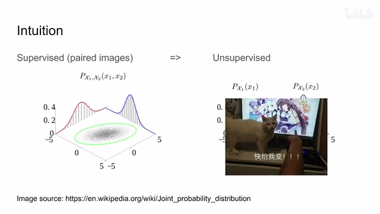
00:01:45–00:01:48 · 画面 00900:01:48–00:02:15 · 画面 010
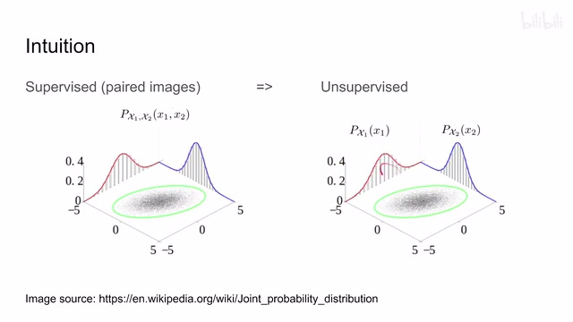
00:01:48–00:02:15 · 画面 010或者换句话来说我们仅通过两个这个 marginal 的这个 distribution 我们是没法估计出这个 joint distribution 所以为了解决这个问题呢我们必须要引入一些假设提供一些额外的对这个 joint distribution 的这个猜测这样子呢让我们这个 translation 能够进行下去那在本文中呢作者进行的猜测呢也很直接我就假设我们存在一个两个这个 domain 共用的一个 latent space 那么对应的图像呢它们有这个 latent code
00:02:15–00:02:38 · 画面 011
00:02:15–00:02:38 · 画面 011从这个 z 我们可以 decode 出两张图片我们只要用不同的 decoder 就可以 decode 出这两张图片同时我们通过不同的 encoder 可以把两个 domain 的图像都给它映射到 z 上来简单来说就是这样对吧你一个 domain 里面 x1 另一个 domain 里面 x2 假如说它们这两个图是对应的实际上我们数据集里面没有这种对应关系我们只是假设这两个图是对应的它们通过不同的 encoder 都能映射到 z 上面来
00:02:38–00:02:40 · 画面 012
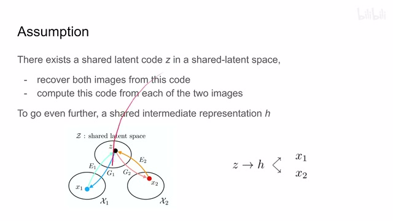
00:02:38–00:02:40 · 画面 01200:02:40–00:03:02 · 画面 013
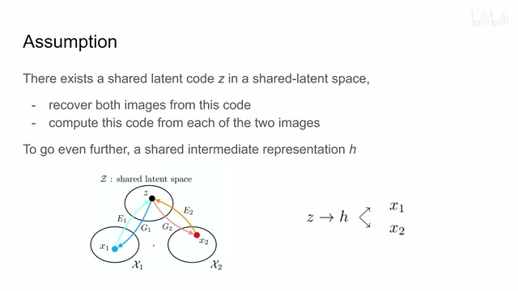
00:02:40–00:03:02 · 画面 013通过不同的 Decoder 或者叫 Generator 对吧都能够解码回来啊这个呢是作者的一个假设那当然我们可以更进一步啊假设我们有一个这个 Shared Intermediate Representation 就是你这两个 Domain 到中间来不用解到 Z 的时候啊他们两个就已经有相似之处了他们两个就已经到一个 Shared Representation 了啊就像这样
00:03:02–00:03:03 · 画面 014
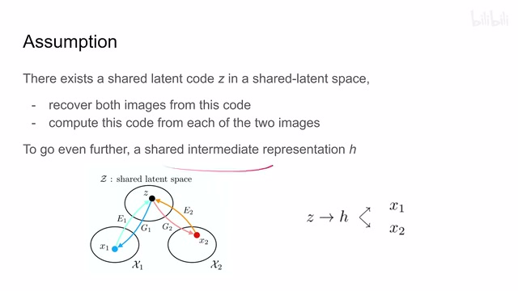
00:03:02–00:03:03 · 画面 01400:03:03–00:03:48 · 画面 015
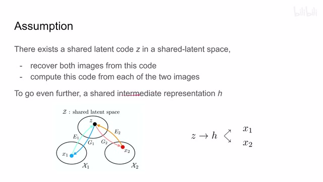
00:03:03–00:03:48 · 画面 015相当于你从 H 到 Z 从 Z 到 H 这一段就是两个斗妹相通的你从 H 到不同的斗妹这一块呢是不同的或者从不同的斗妹解到这个 H 那这一块呢是两个斗妹各不相同的这就像你们异地店两个人啊一个从东山路 800 号出门一个从莲花南路 3000 号出门啊两个人都要去红桥火轮站啊结果呢咱就先在这个东山路地铁站碰头吧对吧一个道理的啊这一块不懂什么意思同学不好意思啊这个不影响你理解那么有了这个 sum 值之后呢我们就可以开始真正的去做这个网络了那这里呢作者设计了一个非常直观的网络就是你看我们从 x1 往返 z 那需要 encoder 需要 generator 我们从 x2 往返 z 需要 encoder 需要 generator 对吧那四个网络 100
00:03:48–00:03:50 · 画面 016
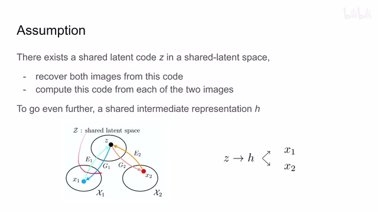
00:03:48–00:03:50 · 画面 01600:03:50–00:04:10 · 画面 017
00:03:50–00:04:10 · 画面 017同时我们为了提高生成图像的质量，这才给每个 Generator 配一个 Discriminator，对吧？那么这里这个第一和第二就有了，可以看到这个就是本文的网络架构，一共有 6 个部分。那么有了这个网络架构之后，我们就可以看它这个 Loss 的设计了。首先，既然我们是 Discriminator 一个 GAN 的形式，那么它必然是存在 GAN Loss。
00:04:10–00:04:12 · 画面 018
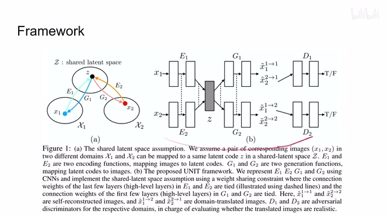
00:04:10–00:04:12 · 画面 01800:04:12–00:04:17 · 画面 019
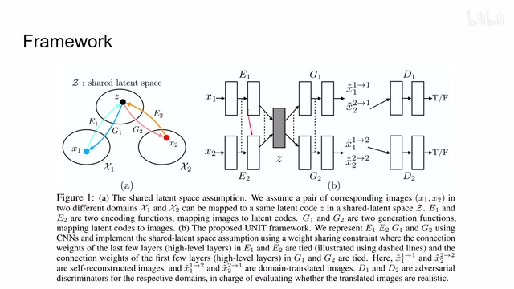
00:04:12–00:04:17 · 画面 01900:04:17–00:06:02 · 画面 020
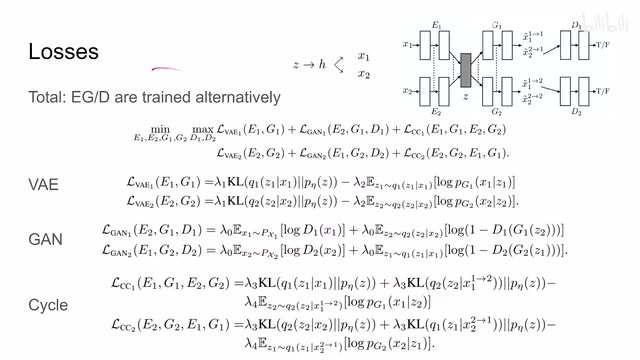
00:04:17–00:06:02 · 画面 020同时我们是两个 Domain，它们可以相互的翻译，因为它们都是走到中间 Latent Representation，然后去到另一个 Domain，所以我们就可以引入 Cycle Consistency loss。那么当然，既然来都来了，对一个 Domain 里面有 Encoder 和 Generator，我们为什么不顺便也做一个 Reconstruction loss？所以我们的网络它的 loss 主要就是三个部分。
reconstruction 也就是 VAE 的部分，gan loss 就是后面 generator discriminator 的部分，最后还有一个 cycle consistency loss。那么当然跟这个标准的 gan 一样，我们 train 这个 encoder 和 generator 的时候，把这个 discriminator 锁住，然后下一个阶段我们 train 这个 discriminator 的时候，把这个 encoder 和 generator 给锁住，就是交替的训练这两个部分，这是一个标准的流程。下面我们具体来看这三个 loss，然后 VAE 对吧？ELBO 这些东西。
Decoder 的输出尽量接近这个高斯 DistributionDecoder 的输出呢尽量接近真实值，对吧？这两个同时呢，每一个部分都有相应的权重，就是灵活一些嘛。那对于这个干道子来说，就是 Discriminator 嘛，对吧？真的样本就是真实的图像嘛，就扔进去行了，每个斗面呢都可以做真实的图像。那么假的样本呢就是从这个 Generator 里面输出出来的图像。
你不管是重建出来的图像还是 translation 过来的图像，都是这个 domain1 里面的，都可以作为这个 negative sample，都可以作为这个 false。那么这个呢是用来 train 这个 discriminator。但是呢，当你在用这个 gan loss 去 train 这个 generator 的时候呢，我们之前已经有这个 reconstruction loss 去代表这些 reconstruction 的样本他们的这些 loss。所以呢，在这个阶段呢，我们只需要把这个 translation 过来的这些样本他们的梯度呢传递下来，沿着这些东西呢来计算就好了。
00:06:02–00:06:03 · 画面 021
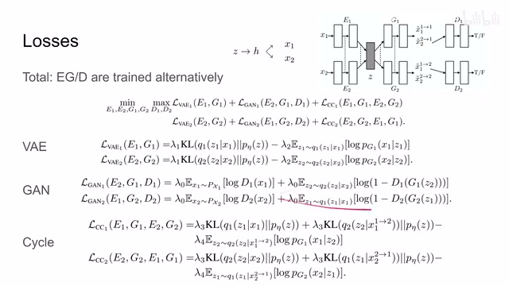
00:06:02–00:06:03 · 画面 02100:06:03–00:06:05 · 画面 022
00:06:03–00:06:05 · 画面 022那么这个呢是这个 gan loss。那最后这个 cycle consistency 那更好理解了对吧？一个图像 x1 对吧，从这进来 encoder11 进来编出来的，我们叫这个 z1z1 送到这个 j2 里面得到这个 translation 图像就是这个东西。那既然 cycle 嘛来塞回来，把这个 translation 的这个图像送到这个 x2 这个 encoder 里面送回来，得到这个 translation 叫 z2。
00:06:05–00:06:08 · 画面 023
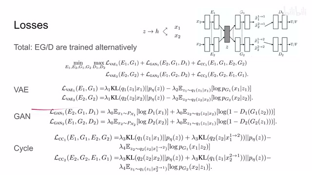
00:06:05–00:06:08 · 画面 02300:06:08–00:06:56 · 画面 024
00:06:08–00:06:56 · 画面 024那这个 Z2 呢再去过这个 Z1 这个 encoder 得出来呢，应该是这个跟 X1 是一样的，就是过这么一个循环对吧，得出来应该是跟 X1 一样的。那我们继续来看这个 loss，那这个 loss 有三部分，首先第一个 loss 很好理解嘛，你的这个 X1 进来得到 Z1 的这个过程，它呢要尽量跟这个高斯 distribution 跟我们假设的这个 Z 的 distributionJMM 要相符嘛，对吧？所以呢一个 KL divergence。
那第二个 Loss 呢比较有意思，就是你看到我们的 Translation 过来之后送到这个 Encoder 第二个 Encoder 里面之后，它得出来的是这个 Representation Z2。它呢既然也是一个 Encoder 输出的值，那么它也应该跟我们的这个高斯 distribution 相符。所以呢又一个 KL Divergence 用它呢来训练这个 E2。那么当然，既然是这个 Cycle 嘛对吧，把这个环儿闭上，我根据这个 Z2 重建出来这个 X1 应该是跟 X1 是一样的。所以呢这里一个 Negative Log likelihood 对吧
00:06:56–00:06:57 · 画面 025
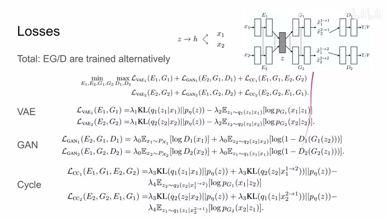
00:06:56–00:06:57 · 画面 02500:06:57–00:07:01 · 画面 026
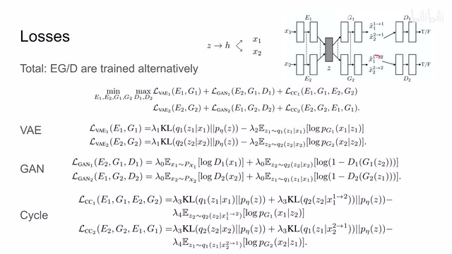
00:06:57–00:07:01 · 画面 02600:07:01–00:07:02 · 画面 027
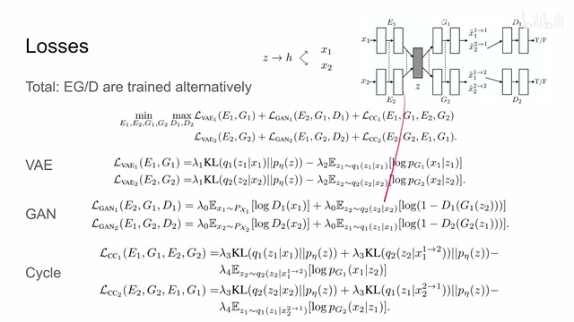
00:07:01–00:07:02 · 画面 02700:07:02–00:07:16 · 画面 028
00:07:02–00:07:16 · 画面 02800:07:16–00:07:17 · 画面 029
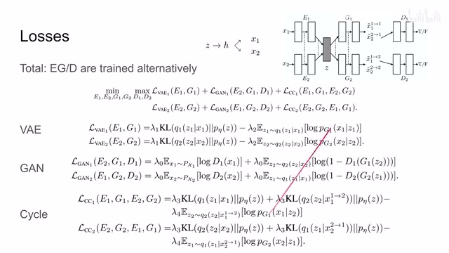
00:07:16–00:07:17 · 画面 02900:07:17–00:07:26 · 画面 030
00:07:17–00:07:26 · 画面 030这样子呢这个 cycle 就完成了。那么以上呢就是本文这个 loss 的设计。那么最后呢一点小的细节，比如说像我们之前说的这个共享的这个权重。但是因为我们假设说我们这个 S1 和 S2 它们首先在这个 H 这个地方就已经达成共识了。我们在提更高的这个 feature 的时候呢，完全就可以用同一套的这个 encoder 和 decoder
00:07:26–00:07:27 · 画面 031
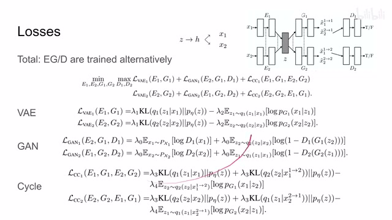
00:07:26–00:07:27 · 画面 03100:07:27–00:07:28 · 画面 032
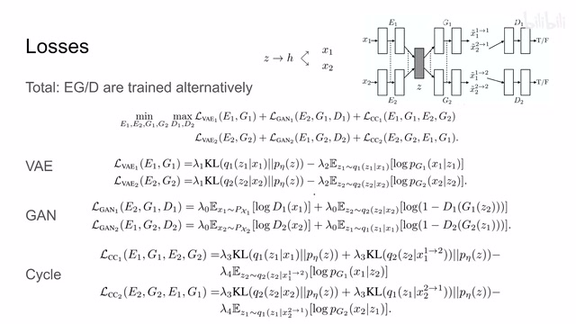
00:07:27–00:07:28 · 画面 03200:07:28–00:08:24 · 画面 033
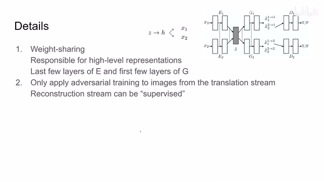
00:07:28–00:08:24 · 画面 033所以 encoder 的最后几层和 decoder 的最开始的几层，它们这两个 branch 是 share 的。你可以看到这里的虚线表示它们的权重是被 share 了。那么第二点我们之前也提到了这个 generator 出来的图像，既有 reconstruction 的图像，也有这个 translation 过来的图像啊。他们都作为这个负样本 negative samples 送到我们 discriminator 里面。但是当我们 discriminator 给我们 generator 传递这个 loss 的时候呢，我们只计算 translation 这一只的他的这个 loss。因为我们的 reconstruction 这一只的 loss 呢已经在这个 vae reconstruction 这个 loss 中呢包含了。所以呢这是另一个小的细节。那么下面我们就直接来看作者汇报的结果了
00:08:24–00:09:42 · 画面 034
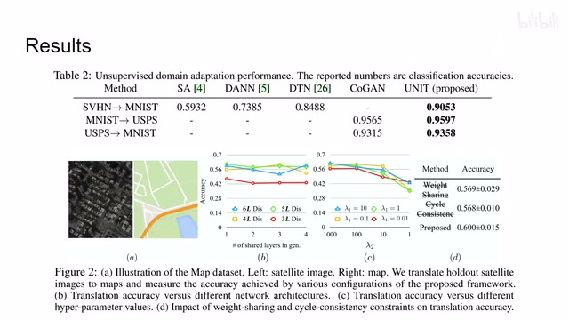
00:08:24–00:09:42 · 画面 034那在我们具体介绍这些结果之前，首先快速的回顾一下我们应该如何评价一个 GAN 对吧。第一点，首先最直接的，如果有 ground truth，那直接算 ground truth 这是最好的。那第二种，如果我们没有 ground truth，这也是很多情况下也是本文研究的问题，怎么办呢？我们用这个已经培训好的一些大的网络，比如说 Inception Network，你可以直接用这个网络来给它评分对吧。IS 你也可以计算这个生成图像的 representation 和真实图像的 representation 它们这个距离，比如说 FID
那第三种呢更暴力一点，我直接拿生成的图像去做下游的任务。如果下游任务做的好，那说明我们的这个图像的质量是高的。那这里呢我们来看作者汇报的结果。table2 呢这里是不同的数据集，然后呢用下游任务的这个分类的准确性作为一个评价的指标。本文的方法那这里呢是一个 ablation，这里呢它有这个 ground truth 直接来看你预测出来的这个像素对不对嘛用它来统计一个准确率。你可以看到呢，如果去掉这个 weight sharing 和这个 cycle consistency 呢，我们这个性能呢有大幅的下降。那这里呢还有 evaluation，比如说不同的 hyperparameter 应该取多少，然后呢我们的权重呢应该 share 多少层。好的，那么以上就是我对这个论文的一个快速的梳理。论文的方法呢还是非常简单，非常适合 computervision 这些课呢做一个小的作业。那么感谢您的收看，再见
00:09:42–00:09:42 · 画面 035
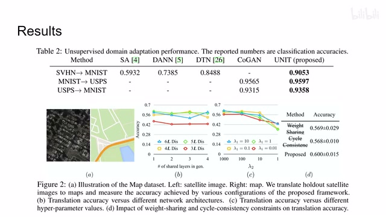
00:09:42–00:09:42 · 画面 035转写与来源说明 · 12 个自动复核提示
保留 43 个原始语音片段，12 个片段触发自动复核提示。提示仅用于定位可能的术语、重复或识别问题，不等于已确认错误。
讲解画面为源视频截图（640×360），不是可编辑 PPT 文件。全片按每秒 2 帧扫描内容变化，逐步展开页保留；连续动画保留代表画面。清晰度受源视频限制。
原视频：paper/合集_2026-10-16_内容生成/[论文简析]Unsupervised Image-to-Image Translation Networks[1703.00848].mp4
SHA-256：6cdd13e0e28da8ca3f9c6a0562aae436d532845e6987b2ce3c9d1fea75492af6
这些呢,我们可以叫它 Supervised Image Translation
相当于把这个 Ground Truth 告诉你了
那显然对应的到
等于这个 unsupervised 的情况
就是两个 domain 里面
没有对应的图像了
这个要全靠这个网络自己发挥了
那同时呢
我们可以从联合分布的这个角度呢
来看这个问题
我们的这个 supervised 的情况
我们一个 domain 的这个概率分布
全文按视频语音与画面制作。原论文可从上方链接下载；完整资料包保留全文、原始逐字稿、字幕和校对记录。